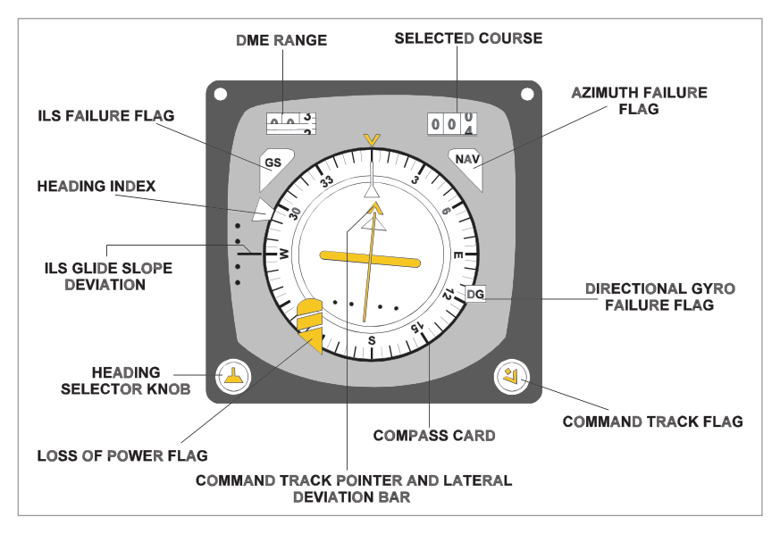
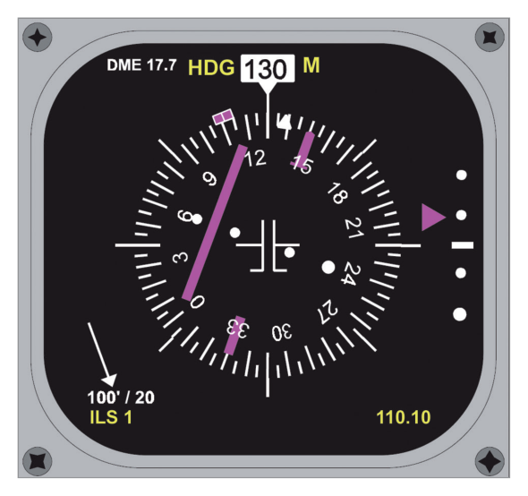
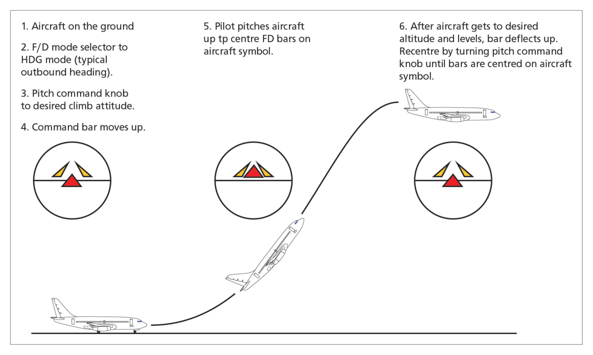
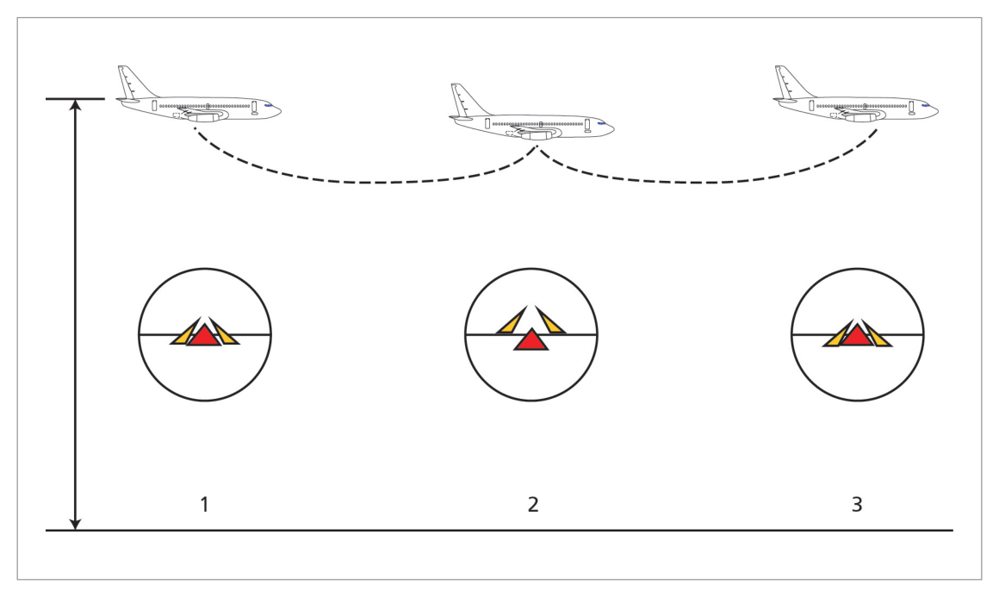
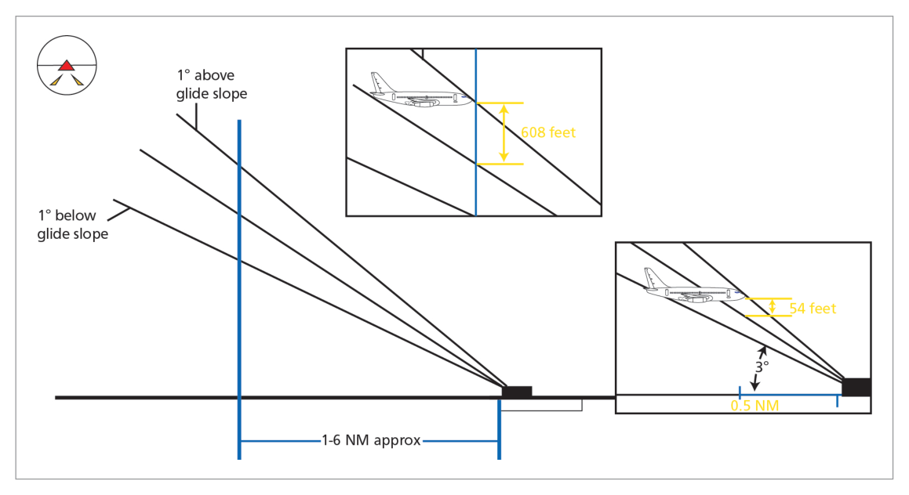

What this section covers: What a Flight Director System is, why it was developed, and its relationship with the autopilot.
The Flight Director System (FDS) was originally developed as an aid to the pilot during landing. It provides steering and attitude signals on one instrument, reducing workload. As autopilots became more advanced, FDS signals could be coupled to the autopilot for more complex tasks.
With an FDS, information about attitude, heading and flight path can be integrated with navigation information to produce:
Easy-to-interpret visual instructions for the pilot (via flight director bars), and/or
Direct input to the autopilot, or both simultaneously
FDS has 2 Channels: Roll channel (first channel) and Pitch channel (second channel). This terminology aligns with autopilot channel descriptions.
2. FDS Information Sources
What this section covers: Inputs to the FDS from various aircraft sensors.
Input
Source
Airspeed, altitude, VSI
Pitot-Static system or Air Data Computer (ADC)
VOR / ILS tracking
VHF Nav receiver
Navigation/routing
FMS, INS/IRS
Attitude (older)
Gyro-magnetic compass + vertical gyro system
Attitude (modern)
INS/IRS (replaces vertical gyro)
3. Flight Director System Components
What this section covers: Each component of a typical modern FDS.
Electronic Attitude Director Indicator (EADI)
A standard artificial horizon providing pitch and roll. The Director part comes from its ability to display demand information from the FDS using Flight Director Command Bars. The pilot "flies to" either the intersection of the cross-bars or the point between wedge-shaped pointers. Both displays are intuitive and functionally identical.
Part of EFIS — brings all flying information onto one display. Contains EADI surrounded by speed, altitude and VSI tapes plus a compass display. Includes the Flight Mode Annunciator (FMA) area.
Modern aircraft use a Navigational Display (ND) and a centralized Autoflight Mode Control Panel (AMCP / MCP) for course selection rather than a knob on the HSI.

Fig 25.4 — HSI Display (source p.341)

Fig 25.5 — EHSI Display (source p.341)
Flight Director Computer (FDC)
Gathers and processes all inputs. Older aircraft use analogue ADC/VG outputs; modern systems are purely digital. Outputs go to symbol generators for EADI/EHSI and/or the autopilot.
Optional Components
Component
Function
Instrument Amplifier / Symbol Generator
Drives electromechanical instrument motors; feeds EFIS symbol generators on modern aircraft
Vertical Gyro (VG)
Remote gyro providing attitude reference on older/smaller aircraft without INS/IRS
INS/IRS
Replaces VG on modern aircraft; more sensitive, near aircraft C of G
Mode Controller / MCP
Allows pilot to change FDS mode, alter pitch trim, switch FDS display on/off
Mode Annunciators / FMA
Shows current FDS/autopilot mode and phase
FMA (Flight Mode Annunciator) on EFIS Aircraft
Engaged modes — top line, shown in green
Armed modes — second line, shown in white
Newly changed mode — surrounded by a box for emphasis
On older annunciator panels: LOC light = amber (armed) → green (captured). GS light = amber (armed) → green (captured).
4. Raw vs Computed Information
What this section covers: The distinction between raw and computed FDS information — critical for failure scenarios.
Type
Description
Source
Raw Information
Unprocessed; shows aircraft deviation left/right of track or above/below GS in degrees
ILS glide slope indicator, CDI bar
Computed Information
Processed from rate of change of deviation; anticipates turns/climbs/descents for smooth flying
FDC output to command bars
On FDS Failure: Computed information is no longer reliable, but raw information may still be available and can be used for navigation. This is critical in the event of an FDC failure during an ILS approach.
Exam Tip: Computed information uses the rate of change of deviation — as deviation rate increases, the FDS demands a turn to intercept track. Raw information simply shows how far off track you are.
5. FD Fail Indications
What this section covers: How the FDS warns of failures on electromechanical and EFIS displays.
Flag/Warning
Failure Indicated
Location
"GYRO" warning flag
Vertical gyro or vertical reference system failure, or power supply failure
ADI
"ATT" or "FD" flag
FDC failure, instrument amplifier failure, or ADI failure
ADI
"GS" flag
Glide slope information unreliable or system failure
GS scale on ADI or HSI
"NAV" flag
Poor reception, unreliable or loss of VOR, LNAV or LOC information
HSI
Power failure flag
Loss of power to HSI or compass gyro; also indicates DG mode
HSI
DG Mode: The HSI will indicate if the compass system is operating in Directional Gyro (DG) mode — meaning the magnetic reference has been lost and the compass is essentially a DI (Direction Indicator) without magnetic slaving.
6. Flight Director Modes
What this section covers: The main FDS modes common across aircraft types.
Command Attitude Changes
The FD command bars can be offset vertically to provide an aiming point for maintaining a constant pitch angle (level flight, climb, or descent). Achieved by moving the Pitch Trim knob/wheel. Pitch trim is inhibited whenever any other pitch mode is active.
Altitude Acquire / Altitude Hold
Signals from ADC through FDS maintain selected level. If aircraft deviates above desired altitude, FD commands pitch down; if below, it commands pitch up. Command bars indicate neutral position at selected level.

Fig 25.7 — FD modes overview (source p.345)

Fig 25.8 — Altitude Acquire mode (source p.345)
7. Navigation Modes
What this section covers: Heading mode, LOC/VOR/LNAV tracking, and Flight Director Approach (FDA).
Heading Mode
Pilot selects desired heading via knob on HSI, MCP, or central panel. FDS indicates a fly-to command to bring aircraft onto desired heading.
LOC / VOR (LNAV)
Allows VOR, Localizer, or INS/IRS/FMS/GPS nav information to be fed and displayed on the FDS. After tuning/identifying the VOR, selecting desired track and VOR/LOC on the mode selector, the FDS gives steering commands to intercept and maintain track.
Drift Compensation: Because the FDS compares actual track with desired track and issues commands to fly the desired track, it effectively compensates for wind drift automatically. No wind velocity input required — it is a natural result of commanding the desired course/track.
Flight Director Approach (FDA)
ILS frequency is tuned and identified; QDM set in the course window; mode selector set to AUTO/APP. Sequence:
flowchart TD
A["APP mode selected\nAnnunciator shows LOC armed"] --> B["Localizer captured\nAnnunciator shows LOC (green)"]
B --> C["Approaching GS\nAnnunciator shows GS armed (amber)"]
C --> D["GS captured\nAnnunciator shows GS (green)\nFDS commands nose-down pitch"]
D --> E["Continue ILS approach\nGain scheduling applied as\naircraft nears threshold"]
Above GS Capture: If established on LOC past the GS intercept point (above GS), modern systems may automatically adjust to capture from above. Older aircraft: temporarily switch to MAN/GS to force GS capture from above, or to force a fixed LOC intercept angle.
8. FD Take-off Mode
What this section covers: FD take-off mode commands, engagement criteria, and engine failure procedures (Boeing 737-400 as reference).
Both FD systems should be switched on prior to starting the take-off roll. Take-off mode is engaged by pressing a TO/GA switch on the throttles.
Take-off FD Commands
Phase
FD Pitch Command
FD Roll Command
Initial (before 60 kt)
10° nose-down
Wings level
After 60 kt IAS
15° nose-up
Wings level
After lift-off
Maintain 15°NP until climb rate achieved, then hold MCP speed +20 kt
Wings level
Engaging FD during take-off roll (FD switches off): Press TO/GA after 80 kt IAS but before 2000 ft or 150 seconds after lift-off — command bars appear automatically.
Terminating TO Mode
Below 400 ft RA: both FD switches must be turned OFF
Above 400 ft RA: select other FD pitch modes or engage autopilot
Engine Failure During Take-off
Engine Failure Timing
FD Reference Speed
Before V2
V2
After V2 but below V2 + 20 kt
Speed at time of failure
At or above V2 + 20 kt
V2 + 20 kt
Limitation: Reference speed is never less than V2 for the current flap setting.
9. FD Go-around Mode
What this section covers: FD go-around engagement criteria, commands, and engine-failure scenarios.
For the 737-400, two criteria must be met:
In-flight, below 2000 ft RA, and NOT in the TO mode
TO/GA switch pressed
After GA engagement: command bars appear for both pilots; TO/GA annunciated; MCP IAS/MACH display blanks; airspeed cursors display manoeuvring speed for existing flap.
GA FD Commands
Condition
Pitch Command
Roll Command
2-engine GA
15° nose-up
Hold approach ground track at engagement
Single-engine GA
13° nose-up initial
Same as 2-engine
Single-Engine GA Target Speed
Engine Failure Timing (relative to GA engagement)
FD Target Speed
Prior to GA engagement
MCP selected approach speed
Within 10 seconds of GA; airspeed within 5 kt of GA engagement speed
Airspeed at GA engagement
After 10 seconds; airspeed more than 5 kt above GA engagement speed
Current airspeed at failure
Minimum GA target speed: Never less than V2 speed based on flap position (except in windshear conditions).
10. FD Manoeuvre Protection & Gain Scheduling
What this section covers: How the FDC protects against over-stress, and how gain scheduling adapts FDS commands during approach.
FD Manoeuvre Protection
Modern FDC has aircraft performance parameters stored in memory. With inputs from ADC and other systems, it ensures it never commands a manoeuvre that would overstress the aircraft. This is the precursor to fly-by-wire envelope protection.
Flight Director Gain Scheduling
The FDC varies ("schedules") the gain of pitch and roll demands relative to the task. Most significant during the FDA (Flight Director Approach).
Why it's needed: The ILS glide slope beam diverges from the runway. At different distances, the same 1° of beam error represents very different vertical distances:
Distance
1° GS error = vertical distance
6 NM
~608 ft
½ NM
~54 ft
As the aircraft nears the transmitter, the required correction magnitude decreases. Gain scheduling reduces commanded corrections accordingly — from nearly full authority early in the approach to perhaps ½ or ⅓ of original value near the threshold.
Gain Scheduling Methods (in order of sophistication)
Method
Trigger
Notes
Time-based
Fixed time after GS capture (e.g. 45 seconds)
Earliest; no actual position data
Marker beacon
Passing inner/outer markers
Stepped; now in disuse — markers removed from many airfields
Radio Altimeter
Actual RA height
Most accurate; gradual, continuous; no ground signals needed

Fig 25.9 — FD gain scheduling during FDA (source p.348)
Exam Tip: Radio altimeter-based gain scheduling is the best method because it is continuous (not stepped), requires no ground infrastructure, and directly correlates with actual aircraft height.
11. Dual FDS & Comparator
What this section covers: Dual FDS on large aircraft — the FD comparator function and redundancy.
Large aircraft with 2 FDS (one per pilot) can use the FD Comparator to monitor command bar positions of both systems.
FD Comparator — Command Bars Removed When:
Pitch difference between the 2 FDS ≥ 1–4°, OR
Roll difference between the 2 FDS ≥ 3–9°
Command bars reappear when difference returns within limits.
Comparator Active Conditions
Both FD switches ON and neither autopilot engaged
Only active in TOGA or APP mode below 800 ft RA
Comparator Inhibited When:
On the ground
Either FD affected by electrical bus transfer
Failure of either FD sensor or FD itself
Redundancy: If one FDS fails, as long as display equipment is serviceable, both sets of ADI/HSI can be driven from the one serviceable FDC output — often via a simple switch. EFIS aircraft have a spare symbol generator for additional redundancy.
Quick Revision Summary — Chapter 25:
FDS provides integrated attitude/nav steering commands to pilot and/or autopilot via command bars
FDS has 2 channels: roll (first/primary) and pitch (second/secondary)
Raw info = unprocessed deviation; Computed info = rate-of-change processed (anticipates corrections)
FDC failure: computed info lost, raw info may still be available
TO/GA engagement: 10° NP initial → 15° NP after 60 kt; TO mode exit below 400 ft RA needs both FD switches OFF
Gain scheduling: reduces FD corrections as aircraft approaches ILS transmitter; RA-based = best method
FD Comparator: removes bars at 1–4° pitch or 3–9° roll difference; only active in TOGA/APP below 800 ft RA
FMA: green = engaged (top line), white = armed (second line)
Practice Questions & Detailed Answers
Instructor-generated questions in DGCA CPL/ATPL examination style.
Q1.The Flight Director System was originally developed as an aid for which phase of flight?
Cruise navigation
Landing
Take-off roll
Engine-out climb
Correct Answer: (b) Landing
Explanation: The FDS was originally developed as an aid to the pilot during landing. It provides steering and attitude signals on one instrument to reduce workload during the approach. See Section 1.
Why other options are wrong:
(a) Cruise navigation was a later capability added as FDS technology advanced.
(c) Take-off mode was added later; the original purpose was landing aid.
(d) Engine-out procedures are a specific use case, not the original design purpose.
Instructor's Note: The evolution from a landing aid to a full-flight FDS integrated with autopilot is important context for understanding its architecture.
Q2.What is the key difference between "raw" and "computed" information in an FDS?
Raw information comes from the IRS; computed information comes from the FMC
Raw information shows current deviation; computed information uses rate of change to anticipate corrections
Raw information is used only for autopilot; computed information is for the pilot only
Computed information requires ground station input; raw information does not
Correct Answer: (b)
Explanation: Raw information is unprocessed data (e.g., ILS deviation in degrees) — it shows how far off track you are. Computed information is derived from the rate of change of deviation, allowing the FDS to anticipate turns/climbs/descents for smooth interception of the track. If the FDS fails, raw info may still be available. See Section 4.
Why other options are wrong:
(a) Source sensors are not the distinction — both can use ILS/VOR inputs.
(c) Both can be coupled to autopilot or displayed to the pilot.
(d) Computed information is derived onboard from the FDC; no ground station is involved.
Instructor's Note: On FDC failure, tell your students to use the raw GS/LOC needles — they still work independently of the FDC.
Q3.On an EFIS FMA, how are engaged modes displayed compared to armed modes?
Engaged modes — amber, second line; Armed modes — green, top line
Engaged modes — green, top line; Armed modes — white, second line
Engaged modes — white, top line; Armed modes — blue, second line
Both engaged and armed modes are shown in green; armed modes are boxed
Correct Answer: (b)
Explanation: On an EFIS FMA, engaged modes are shown on the top line in green, while armed modes are on the line below in white. Newly changed information is boxed for emphasis. See Section 3.
Why other options are wrong:
(a) Reverses the green/amber and line positions — engaged is always top line green.
(c) White is used for armed modes, not engaged; blue is not a standard FMA colour.
(d) Armed modes are white, not green; the boxing indicates newly changed modes.
Instructor's Note: Green = active/working RIGHT NOW. White = standby/waiting to capture. This convention is standard across Boeing and most modern aircraft.
Q4.During a Boeing 737-400 take-off with FD engaged, what pitch command is given when IAS reaches 60 knots?
10° nose-up
15° nose-down
15° nose-up
5° nose-up, wings level
Correct Answer: (c) 15° nose-up
Explanation: Initially the FD commands 10° nose-down pitch and wings level. At 60 kt IAS, the FD command changes to 15° nose-up and wings level. See Section 8.
Why other options are wrong:
(a) 10° nose-up is not a standard FD TO command; 10° nose-down is the initial command before 60 kt.
(b) 15° nose-down would put the aircraft on the ground — obviously incorrect.
(d) 5° nose-up is not a standard FD TO command value.
Instructor's Note: Remember the sequence: 10° ND (initial) → 15° NP (at 60 kt) → then pitch to maintain MCP speed +20 kt after achieving climb rate.
Q5.Why is Radio Altimeter-based gain scheduling considered superior to time-based or marker beacon-based methods?
It is cheaper to install and maintain
It provides continuous, gradual scheduling based on actual aircraft height without requiring ground infrastructure
It removes the need for an ILS entirely
It is required by ICAO for all Category 1 approaches
Correct Answer: (b)
Explanation: RA-based gain scheduling is continuous and gradual (vs. stepped), relies on no ground signals (unlike marker beacons, now removed from many airfields), and directly correlates with actual aircraft height above ground — the most operationally relevant parameter. See Section 10.
Why other options are wrong:
(a) Cost is not the cited advantage; the superiority is operational accuracy.
(c) The ILS is still required; gain scheduling just optimizes how the FDS responds to GS deviations.
(d) No specific ICAO requirement for RA-based scheduling is cited; it is a design preference.
Instructor's Note: The fact that marker beacons have been removed from many airfields makes marker-based gain scheduling increasingly obsolete.
Q6.The FD Comparator removes command bars when the pitch difference between the two FDS is approximately:
5–10°
10–15°
1–4°
½–1°
Correct Answer: (c) 1–4°
Explanation: The FD Comparator monitors command bar positions and removes bars when a difference of approximately 1–4° of pitch and/or 3–9° of roll is sensed between the two FDS. See Section 11.
Why other options are wrong:
(a), (b) These are larger thresholds than specified — the comparator acts early to alert of divergence.
(d) ½–1° is too small; minor disagreements within this range are tolerated.
Instructor's Note: The comparator only operates in TOGA or APP mode below 800 ft RA — exactly when precision matters most.
Master Reference Tables
Key Numerical Values — Chapter 25
Value
Parameter
Section
60 kt
IAS at which FD TO pitch changes from 10° ND to 15° NP